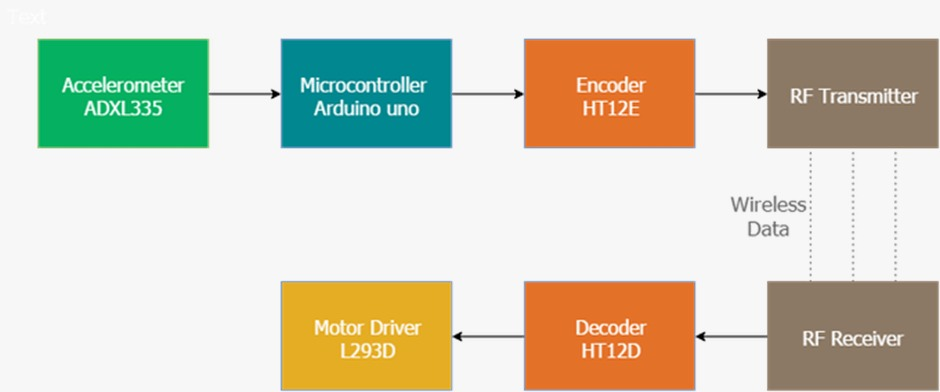
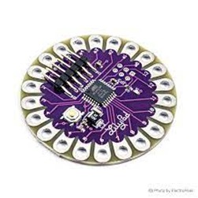
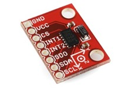
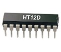
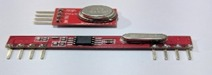
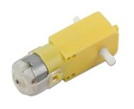

Independent Project
The term IoT i.e., Internet of Things extends capabilities of real-world objects. The objects are connected to Internet so as to make them capable of sensing the environment around them with least human intervention. These devices collect, share and use the data to give suitable output using wireless networks. The Internet of Things is making the world around us smarter and more responsive, merging the digital and physical universes.
Gesture means the movement of hand and face of humans. The main objective of this project is to control the car using human hand gestures. The human hand gestures are sensed with the help of an accelerometer. It is coded in such a way that the required actions for the human gesture are done. These sensed signals are processed and then transmitted to the robotic arm at the receiver section using RF transceiver module. Thus, the car performs the required movement. This system is also using an RF transceiver module for the wireless communication. The model can be constructed and the required work can be done. Thus, this proposed model will be helpful and avoid danger for the people working in hazardous areas.
Gesture recognition technologies are much younger in the world of today. At this time there is much active research in the field and little in the way of publicly available implementations. Several approaches have been developed for sensing gestures and controlling robots. Glove based technique is a well-known means of recognizing hand gestures. It utilizes a sensor attached to a glove that directly measures hand movements. A Gesture Controlled robot is a kind of robot which can be controlled by hand gestures and not the old-fashioned way by using buttons. The user just needs to wear a small transmitting device on his hand which includes a sensor which is an accelerometer in our case. Movement of the hand in a specific direction will transmit a command to the robot which will then move in a specific direction. The transmitting device includes a Comparator IC for assigning proper levels to the input voltages from the accelerometer and an Encoder IC which is used to encode the four bit data and then it will be transmitted by an RF Transmitter module. At the receiving end an RF Receiver module will receive the encoded data and decode it by using a decoder IC. This data is then processed by a microcontroller and passed onto a motor driver to rotate the motors in a special configuration to make the robot move in the same direction as that of the hand.
The applications of the accelerometer-based gesture-controlled robot include:
A hand-gesture-based control interface was introduced for navigating a car-robot in A 3-axis accelerometer is adopted to record a user’s hand trajectories. The trajectory data is transmitted wirelessly via an RF module to a computer. The received trajectories are then classified to one of six control commands for navigating a car-robot. The classifier adopts the dynamic time warping (DTW) algorithm to classify hand trajectories. Simulation results show that the classifier could achieve 92.2% correct rate. A novel, non-contact, pointing interface is being developed for control of non-safety critical systems inside a vehicle with the aims of improving safety, decreasing manufacturing cost and improving the ease of driver migration between different cars in [2]. A driver operates the interface via an onscreen cursor using pointing gestures to be identified by a computer vision system. This paper describes the vision subsystem responsible for detection and tracking of the driver’s hands. To be robust, it must detect and track under varying lighting conditions with no prior assumptions concerning the colour of the hands or clothing. Adaptive foreground and background models are used for segmentation and a robust geometrical hand model is employed for tracking. The system is demonstrated working at speeds close to real-time on a standard PC using image sequences captured inside a car.
The integration of more and more functionality into the human machine interface (HMI) of vehicles increases the complexity of device handling. Thus, optimal use of different human sensory channels is an approach to simplify the interaction with in-car devices. This way the user convenience increases as much as distraction may decrease. In this paper a video based real time hand gesture recognition system for in-car use is presented. It was developed in course of extensive usability studies. In combination with a gesture optimized HMI it allows intuitive and effective operation of a variety of in-car multimedia and infotainment devices with hand poses and dynamic hand gestures. Envision to add context awareness and ambient intelligence to edutainment and computer gaming applications in general was implemented in [4]. This requires mixed-reality setups and ever-higher levels of immersive human-computer interaction. Here, the focus is on the automatic recognition of natural human hand gestures recorded by inexpensive, wearable motion sensors. To study the feasibility of this approach, an educational parking game was chosen with 3-D graphics that employs motion sensors and hand gestures as its sole game controls. The implementation prototype is based on Java-3D for the graphics display and on the CRN Toolbox for sensor integration. It shows very promising results in practice regarding game appeal, player satisfaction, extensibility, ease of interfacing to the sensors, and – last but not least – sufficient accuracy of the real-time gesture recognition to allow for smooth game control. An initial quantitative performance evaluation confirms these notions and provides further support for the setup.
Hand gesture recognition is an essential way for Human-Robot Interaction (HRI). Sign language is the most intuitive and direct way to communication for impaired or disabled people. Furthermore, emotional interaction with human beings is desirable for robots. In this paper, hand gesture recognition and emotion recognition of an integrated system will be described which has ability to track multiple people at the same time.
The gesture-controlled robot works on the principle of an accelerometer (MPU 6050) which records the hand movements and sends the data to the Raspberry Pi which assigns proper voltage levels (either 3.3V or 0V). The Raspberry Pi is being used in the BCM mode. The information is then fed to an Encoder (HT 12E) which makes it ready for RF transmission. The RF module used here is RF434. On the receiving end, the information is received by the RF receiver and then passed on to the decoder (HT 12D). The data from the encoder goes into the motor driver IC (L293D) which triggers the motors in different configurations to move the bot in different specific directions. The block diagram for the entire system is given below:
The entire system can be divided into two parts
one being the transmitter part which includes:
The other being the receiver part which includes:
This is the brain of the car and is installed with some code. The Uno is a microcontroller board based on the ATmega328P. It has 14 digital input/output pins (of which 6 can be used as PWM outputs), 6 analog inputs, a 16 MHz ,206 quartz crystal, a USB connection, a power jack, an ICSP header and a reset button. Arduino consists of both a physical programmable circuit board and a piece of software, or IDE (Integrated Development Environment) that runs on your computer, used to write and upload computer code to the physical board. Arduino Uno can sense the environment by receiving input from a variety of sensors and can affect its surroundings by controlling lights, motors, and other actuators.
An accelerometer is a one type of sensor and it gives an analog data while moving in the direction of X, Y and Z. These directions depend on the type of sensor. This sensor consists of arrow directions, if we tilt the sensor in one direction, then the data at the particular pin will change in the form of analog.
The triple-axis MEMS accelerometer in MPU-60X0 includes a wide range of features:
The HT12E encoder are 12-bit encoders that is they have 8 address bits and 4 data bits. It encodes the 12-bit parallel data into serial for transmission through an RF transmitter.
HT12D converts the serial input into parallel outputs. It decodes the serial addresses and data received by RF receiver into parallel data and sends them to output data pins. The serial input data is compared with the local addresses three times continuously and is only decoded when no error or unmatched codes are found. A valid transmission in indicated by a high signal at VT pin.
An RF Transmitter and Receiver pair is used for wireless communication. The wireless data transmission is done using 434 MHz Radio Frequency signals that are modulated using Amplitude Shift Keying (ASK) Modulation technique.
A machine that converts DC power into mechanical power is known as a DC motor. Its operation is based on the principle that when a current carrying conductor is placed in a magnetic field, the conductor experiences a mechanical force. DC motors have a revolving armature winding but non-revolving armature magnetic field and a stationary field winding or permanent magnet. Different connections of the field and armature winding provide different speed/torque regulation features. The speed of a DC motor can be controlled by changing the voltage applied to the armature or by changing the field current.
• The readings (movement of the hand) are taken from the accelerometer attach on the hand. These readings are sent to Arduino uno.
• These readings are sent to the receiver and are decoded by HT12D. After the readings are decoded, they are sent to L298N motor driver due to which the motors are moved. Thus, the movement of car is achieved.